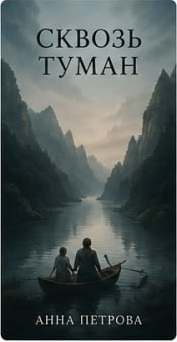

РЕЦЕНЗИЯ НА «СКВОЗЬ ТУМАН»
Тишина, в которой слышно главное
Очень точный и бережный текст о памяти. Автору удалось дать читателю прожить чувства вместе с героями.
Вдумчивые тексты о произведениях авторов Littop. Читайте, обсуждайте и оставляйте своё мнение.

Очень точный и бережный текст о памяти. Автору удалось дать читателю прожить чувства вместе с героями.
Интрига держится до последней страницы, но самое ценное здесь — интонация и живые детали.
Книга оставляет ощущение летнего вечера и желания перечитать отдельные главы.